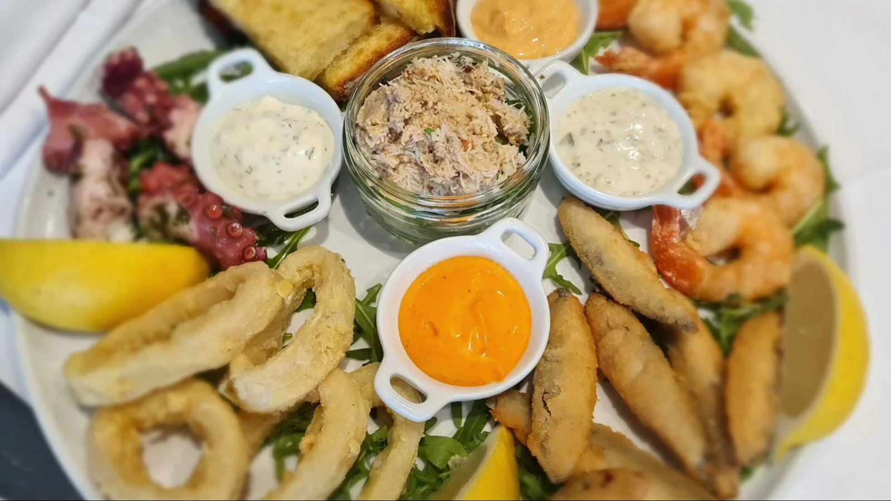
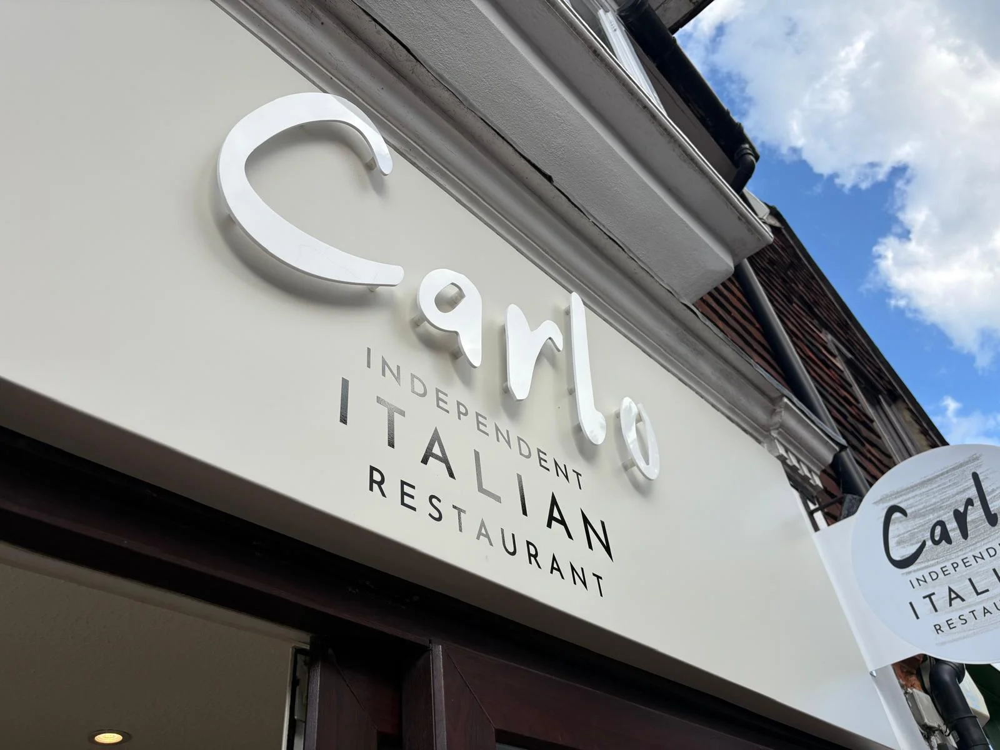

Margherita
Tomato sauce & fiordilatte mozzarella

Carlo Italia · 23 High Street
Your local Italian restaurant, awarded Best Restaurant in Leatherhead by Restaurant Guru, 2026.
Guest reviews
Google review excerpts, reproduced on Restaurant Guru.
“Lovely food, cibo magnifico!”
Claire Whittaker
Google review · excerpt“Great staff. Great food.”
Jack Candlish
Google review · excerpt“The spicy prawns were exceptional”
kaleb mahoneycullen
Google review · excerpt
Find us in the village
A family-owned Italian restaurant for dinner with friends, family meals and takeaway nights.
Carlo Italia · Great Bookham